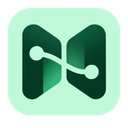

Mirroxy 下载接力
安装后自动连接本机 Mirroxy，无需复制令牌。
自动连接
扩展会自动发现正在运行的 Mirroxy。若刚安装或修改过面板端口，点一次「重新自动连接」即可。
下载行为
下载时会自动携带当前页面的 Referer、浏览器 Cookie 和 User-Agent，以兼容需要登录或防盗链的下载站；这些信息只发送给本机 Mirroxy。
手动配置（一般不需要）
仅当自动连接失败、或 Mirroxy 的 15060 端口被其他程序占用时使用。在 Mirroxy 面板「下载管理 → 浏览器接力」点击「复制扩展配置」，粘贴到下面。
使用方法
- 保持 Mirroxy 后台运行。
- 浏览器里点击下载后，Mirroxy 接单成功会自动取消浏览器下载，任务出现在 Mirroxy「下载管理」。
- 也可以在链接上右键，选择「使用 Mirroxy 下载此链接」。